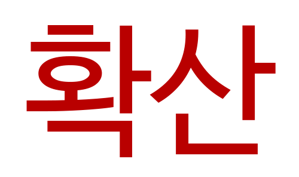

인터넷 방송을 중심으로 인기를 얻었던 먹방은 2010년대에 들어서며 케이블 채널은 물론 지상파 방송에서도 인기 콘텐츠의 하나로 자리 잡았다.
2010년대 중반에 이르러 먹방이 유튜브 등을 통해 전 세계적으로 인기를 끌자, 해외에서도 먹방을 한국어 발음대로 'mukbang'이라고 표기하며 콘텐츠를 재생산하는 양상을 보였다.
또 미국의 CNN, 영국의 BBC와 같은 유력 언론에서도 한국의 먹방을 소개한 바 있는데, 2016년 10월 CNN은 먹방 열풍을 '새로운 형식의 사회적 식사(social eating)'라고 소개하며 먹방이 건강한 식습관 및 채식문화 등을 확산시키는 데 일조할 수 있다고 전망했다.